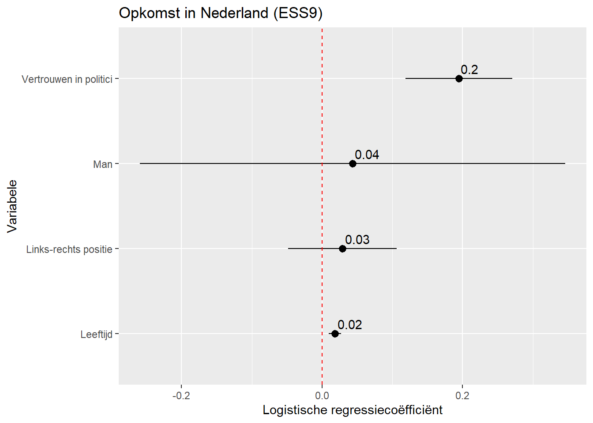
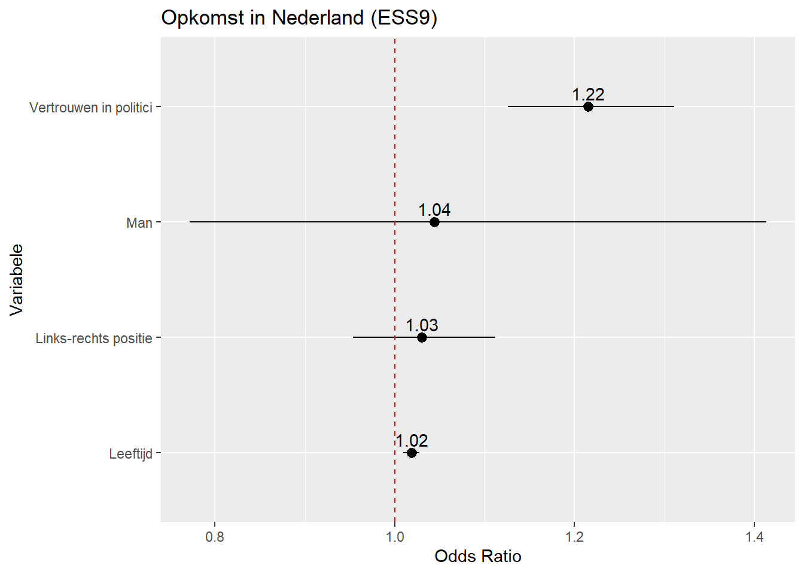
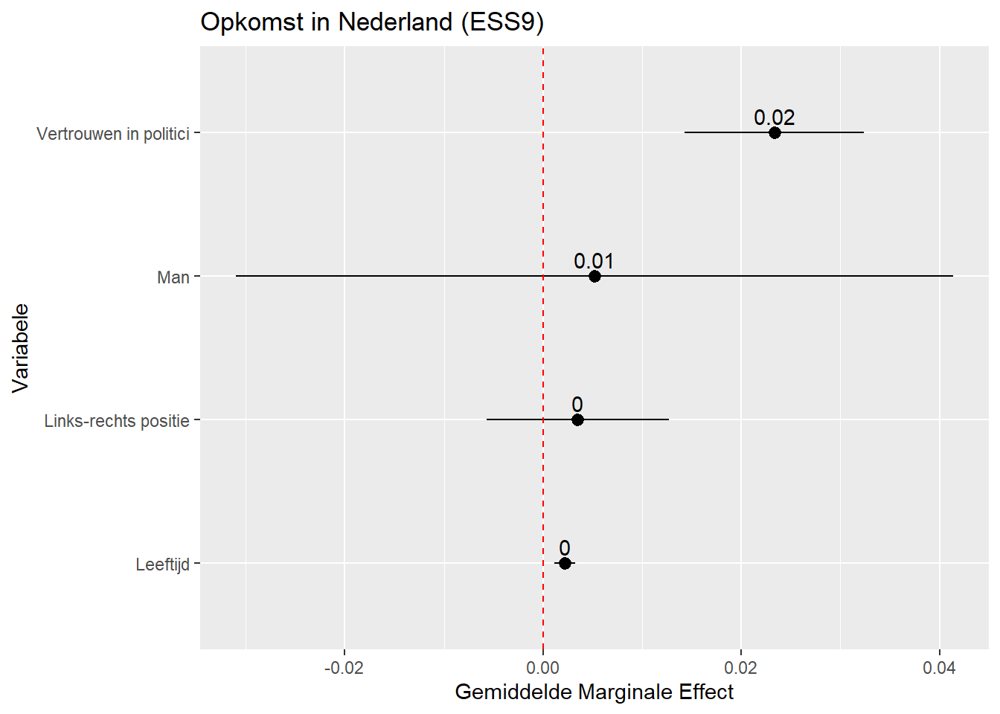
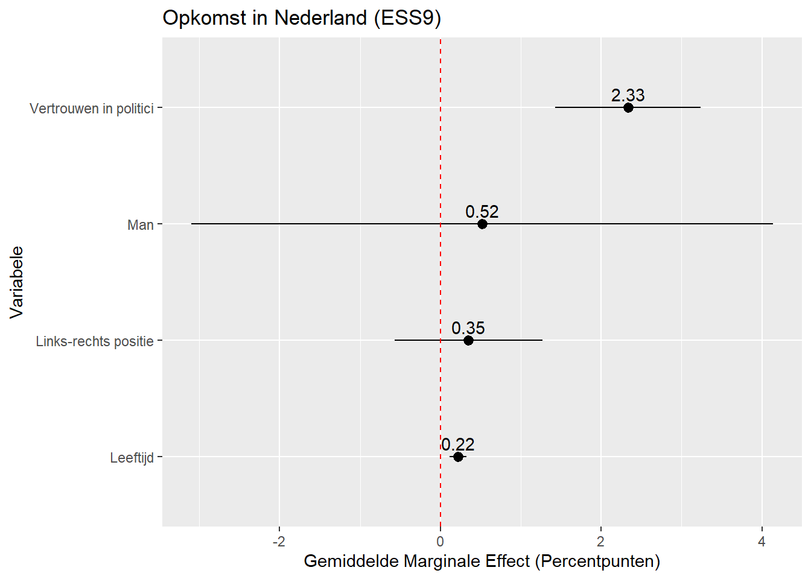
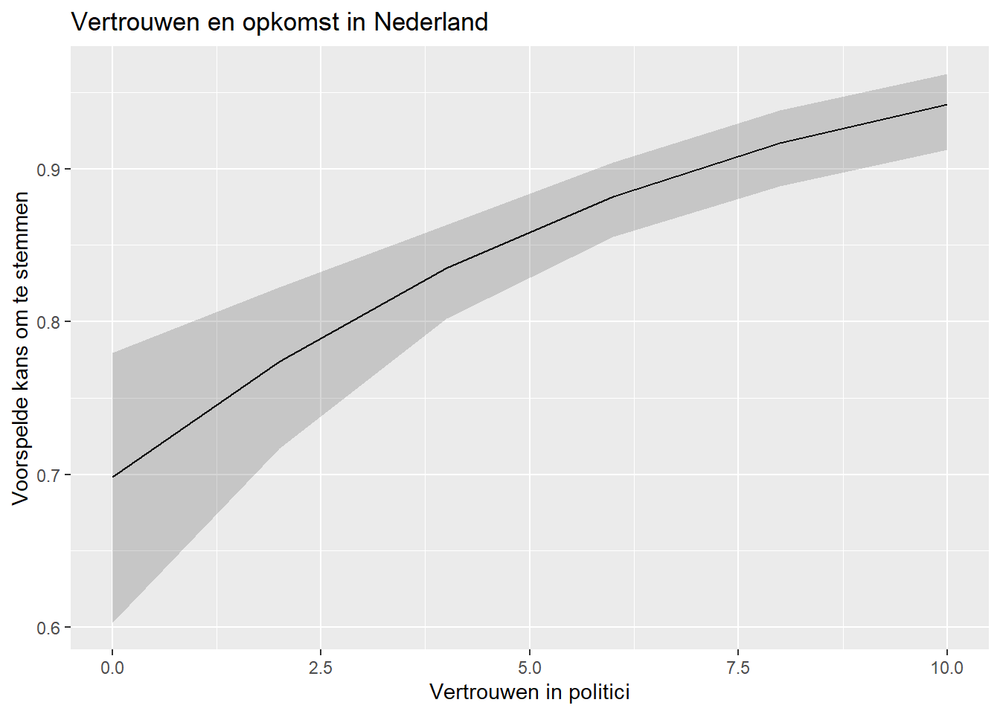
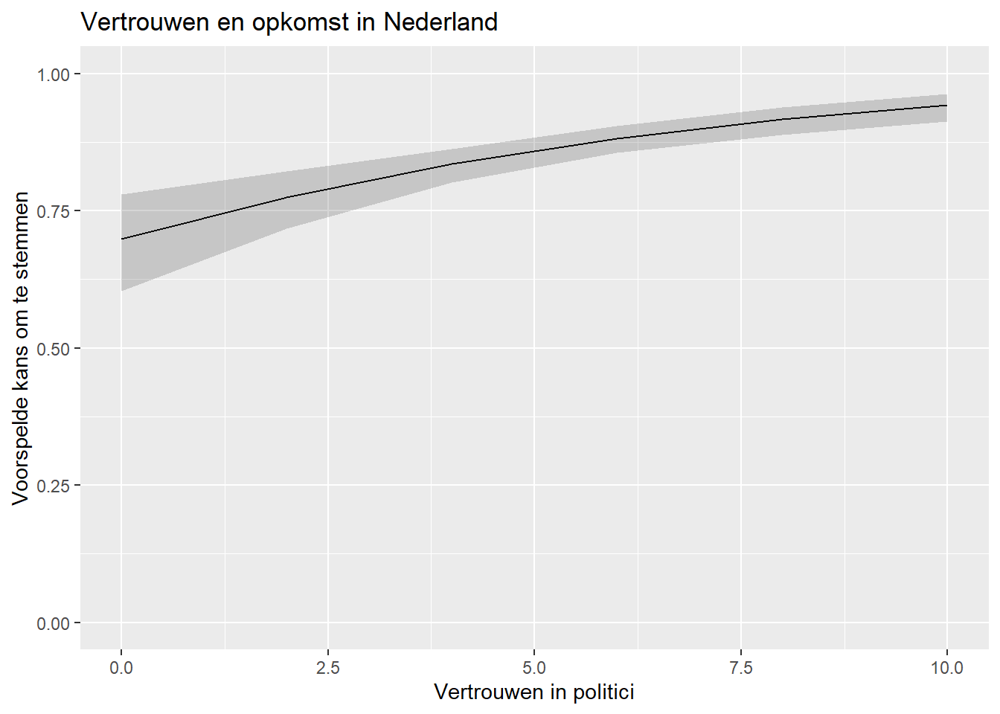
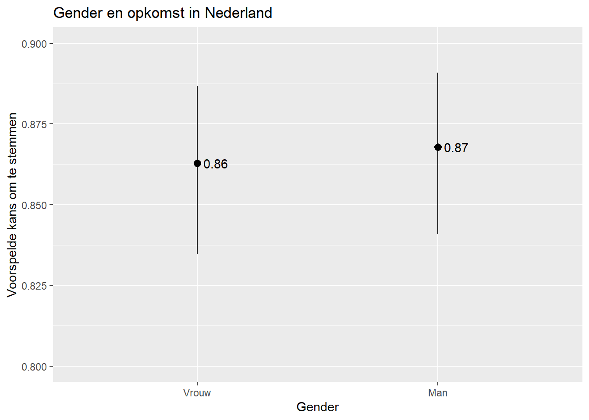

#Packages
library(rio) #laden van data
library(tidyverse) #data manipulatie en grafieken
library(broom) #data voor residuals en influential cases
library(modelsummary) #regressietabellen maken
library(marginaleffects) #voorspelde waarden berekenen
#Data
ESS9NL <- import("ESS9e03, Netherlands.sav")14 Rapporteren en Presenteren van Resultaten
Logistische regressiemodellen moeten we net zoals lineaire modellen ook kunnen presenteren en uitleggen aan anderen. In dit hoofdstuk bespreken we de gangbare manieren om dit te doen.
We gebruiken deze packages en data:
We gebruiken onderstaand model in deze voorbeelden. Zie ook de vorige hoofdstukken voor verdere uitleg over dit model:
#Data Preparation
ESS9NL <- ESS9NL |>
#Factorize our IVs
mutate(gndr = factorize(gndr), #
vote = factorize(vote)) |>
#Remove Not Eligible to Vote Category from vote
mutate(vote = na_if(vote,"Not eligible to vote")) |>
#Relevel our variables like we did last time
mutate(vote = relevel(vote, "No"),
gndr = relevel(gndr, "Female")) |>
#Drop the extra level in gndr
mutate(gndr = droplevels(gndr))
#Our model
Vote_model_mp <- glm(vote ~ gndr + agea + trstplt + lrscale,
data = ESS9NL, family = "binomial")
#Check the output
summary(Vote_model_mp)- 1
-
Deze data management stap zorgt ervoor dat we straks de gemiddelde marginale effecten kunnen berekene zonder error zie Chapter 10 . Dit is niet nodig als je
factor()gebruikt in plaats vanfactorize().
Call:
glm(formula = vote ~ gndr + agea + trstplt + lrscale, family = "binomial",
data = ESS9NL)
Coefficients:
Estimate Std. Error z value Pr(>|z|)
(Intercept) -0.284194 0.380455 -0.747 0.455
gndrMale 0.043281 0.154201 0.281 0.779
agea 0.018349 0.004503 4.075 4.61e-05 ***
trstplt 0.195020 0.038706 5.039 4.69e-07 ***
lrscale 0.029257 0.039306 0.744 0.457
---
Signif. codes: 0 '***' 0.001 '**' 0.01 '*' 0.05 '.' 0.1 ' ' 1
(Dispersion parameter for binomial family taken to be 1)
Null deviance: 1173.9 on 1424 degrees of freedom
Residual deviance: 1135.3 on 1420 degrees of freedom
(248 observations deleted due to missingness)
AIC: 1145.3
Number of Fisher Scoring iterations: 414.1 Rapportage
Een rapport van een logistisch regressiemodel bevat best de volgende zaken:
- Een bespreking van de richting van de relatie en wat dit concreet betekent (de codering van de variabelen inachtgenomen).
- Bij een multiple regressie is het belangrijk te verduidelijken dat het effect dat je vindt voor een onafhankelijke variabele gecontroleerd is op de andere onafhankelijke variabelen in het model. Deze worden ‘constant gehouden’ (oftewel ‘ceteris paribus’).
- Een bespreking van de AMEs of voorspelde waarden om de sterkte van de associatie te duiden.
- Een bespreking van de statistische significantie (verwerpen of niet nulhypothese?) met vermelding van z-statistiek en p-waarde en/of het betrouwbaarheidsinterval.
- Coëfficiënten met p-waarden groter dan 0.05 worden meestal niet als statistisch significant of als statistisch significant bij conventionele niveaus beschouwd.1 Rapporteer op basis van het hoogste signficantieniveau dat de p-waarde aangeeft:
- Als p = 0.04, dan p < 0.05 (significant op 95% niveau)
- Als p = 0.02, dan p < 0.01 (significant op 99% niveau)
- Als p = 0.0000005, dan p < 0.001 (significant op 99.9% niveau)
- We rapporteren meestal niet hoger dan 99.9% of p < 0.001 (bv., we zeggen niet p < 0.000001, maar p < 0.001). We schrijven ook nooit p < 0.000.
- Het betrouwbaarheidsinterval kan ook gebruikt worden om statistische significantie te bespreken en de onzekerheid rond de geschatte AMEs/voorspellingen aan te duiden. Als je het betrouwbaarheidsinterval bespreekt, kun je dit tussen haakjes toevoegen, bv. “het gemiddelde marginale effect van leeftijd is 0.004 (95% CI: -0.006, 0.013)”.
- Het is minder gebruikelijk de z-statistiek concreet te benoemen, maar het is ook geen probleem als je dit doet. Indien de z-waarde wordt opgenomen, zet je deze bij de p-waarde: “(z = 1.18, p > 0.05)”.
- Coëfficiënten met p-waarden groter dan 0.05 worden meestal niet als statistisch significant of als statistisch significant bij conventionele niveaus beschouwd.1 Rapporteer op basis van het hoogste signficantieniveau dat de p-waarde aangeeft:
Hieronder vind je een voorbeeld voor gndr (binaire factor) en trstplt (continue predictor) op basis van het hierboven geschatte model. Zie vorige hoofdstukken voor de berekening van de AME en odds ratio waarden.
Rapportagevoorbeeld
trstplt: De kans dat iemand gaat stemmen is hoger als vertrouwen in politici hoger is. De kans neemt gemiddeld genomen met 2.3 percentpunten toe als vertouwen met 1 eenheid stijgt. De relatie is statistisch significant (p < 0.001).
gndr (AME example): De kans om te stemmen is gemiddeld 4.3 percentpunten hoger voor mannen dan voor vrouwen. Deze relatie is echter niet statistisch significant (p = 0.78).
gndr (Odds Ratio Example): De odds om te stemmen voor mannen zijn 1.04 keer hoger dan die voor vrouwen. Het verschil is echter niet statistisch significant (p = 0.78).
Bijkomende richtlijnen voor besprekingen in papers:
- In je rapportage kun je ook een bespreking van de voorspelde waarden opnemen (bv. wat is de voorspelde kans dat iemand gaat stemmen bij lage en hoge niveaus van vetrouwen in politici?) Een plot van voorspelde waarden kan de bespreking verder verduidelijken. Zie Section 14.5 voor meer informatie.
- Als je onderzoek vooral gericht is op de relatie tussen een specifieke onafhankelijke variabele en de afhankelijke variabele dan is een discussie over de controlevariabelen doorgaans niet nodig.
- Het intercept wordt zelden besproken bij logistische regressies.
- Wees voorzichting in je bespreking van de relatie tussen de variabelen. Causaliteit is moeilijk te bepalen en is onderhevig aan sterke voorwaarden. Je schrijft bijgevolg dus meestal niet het “effect van X op Y” , maar “de verandering in X is geassocieerd met de verandering in Y”.
14.2 Presentatie: Regressietabellen
We gebruiken de modelsummary() funcie uit het modelsummary package om regressietabellen te produceren. De procedure en syntax is gelijkaardig aan die voor lineaire regressietabellen (zie Section 8.4). Het belangrijkste verschil zit in de model fit statistieken.
modelsummary(Vote_model_mp,
stars = TRUE,
coef_rename = c("(Intercept)" = "Constante",
"agea" = "Leeftijd",
"gndrMale" = "Man",
"trstplt"= "Vertrouwen in politici",
"lrscale" = "links-recht positie"),
gof_map = c("nobs", "logLik"),
title = "Opkomst in Nederland (ESS9)",
notes = ("Logistische regressiecoëfficiënten met standaardfouten tussen haakjes"))| (1) | |
|---|---|
| Constante | -0.284 |
| (0.380) | |
| Man | 0.043 |
| (0.154) | |
| Leeftijd | 0.018*** |
| (0.005) | |
| Vertrouwen in politici | 0.195*** |
| (0.039) | |
| links-recht positie | 0.029 |
| (0.039) | |
| Num.Obs. | 1425 |
| Log.Lik. | -567.653 |
| + p < 0.1, * p < 0.05, ** p < 0.01, *** p < 0.001 | |
| Logistische regressiecoëfficiënten met standaardfouten tussen haakjes |
gof_map = c("nobs", "logLik")-
We kunnen verschillende goodness-of-fit statistieken toevoegen aan de tabel. Hier beperken we ons tot het aantal observaties en de log likelihood. We kunnen alle statistieken weglaten met
gof_map = NA. Het is meestal een goed idee een Pseudo R2 maatstaf als goodness-of-fit statistiek toe te voegen aan de tabel.modelsummary()voegt echter niet automatisch de Nagelkerke R2 toe. We kunnen deze wel manueel toevoegen aan de tabel in Word in een rij onder ‘Log.Lik.’.
14.2.1 Tabellen met Odds Ratios
Om odds ratios en hun betrouwbaarheidsintervallen in de regressietabel te presenteren moeten een aantal elementen toegevoegd worden. Vergeet in dit geval ook niet het onderschrift (notes) te veranderen.
modelsummary(Vote_model_mp,
exponentiate = TRUE, conf_level=0.95,
statistic = 'conf.int',
stars = TRUE,
coef_rename = c("(Intercept)" = "Constante",
"agea" = "Leeftijd",
"gndrMale" = "Man",
"trstplt"= "Vertrouwen in politici",
"lrscale" = "links-recht positie"),
gof_map = c("nobs", "logLik"),
title = "Opkomst in Nederland (ESS9)",
notes = ("Odds ratios met 95% betrouwbaarheidsintervallen"))- 1
-
Vraagt
modelsummary()de logistische coëfficiënten te exponentiëren, wat de odds ratios oplevert. - 2
-
Vraagt
modelsummary()de 95% betrouwbaarheidsintervallen te produceren. Dit is gebruikelijk bij odds ratios.
| (1) | |
|---|---|
| Constante | 0.753 |
| [0.357, 1.588] | |
| Man | 1.044 |
| [0.772, 1.413] | |
| Leeftijd | 1.019*** |
| [1.010, 1.028] | |
| Vertrouwen in politici | 1.215*** |
| [1.126, 1.311] | |
| links-recht positie | 1.030 |
| [0.953, 1.112] | |
| Num.Obs. | 1425 |
| Log.Lik. | -567.653 |
| + p < 0.1, * p < 0.05, ** p < 0.01, *** p < 0.001 | |
| Odds ratios met 95% betrouwbaarheidsintervallen |
exponentiate = TRUE,-
Met deze code vragen we om de exponentiële coëfficiënten, i.e., de odds ratios.
conf_level=0.95,-
Met deze code kunnen we het betrouwbaarheidsniveau aanpassen. Standaard is dit niveau 0.95. Als dit het gewenste niveau is, kan deze code ook worden weggelaten.
statistic = 'conf.int'-
Met deze code vragen we om betrouwbaarheidsintervallen te presenteren en niet de standaardfouten (de default).
14.3 Presentatie: Plots van coëfficiënten (en odds ratios)
We kunnen de output ook presenteren in de vorm van een coefficiëntenplot (eventueel met de volledige regressietabel in Appendix), net zoals bij lineaire regressiemodellen. De procedure wordt beschreven in Section 8.5 . Hier is een voorbeeld op basis van bovenstaand model:
tidy(Vote_model_mp, conf.int = TRUE) |>
filter(term != "(Intercept)") |>
mutate(term = recode(term,
"gndrMale" = "Man",
"agea" = "Leeftijd",
"trstplt" = "Vertrouwen in politici",
"lrscale" = "Links-rechts positie")) |>
ggplot(aes(x= estimate, y= term)) +
geom_pointrange(aes(xmin=conf.low,
xmax=conf.high)) +
labs(title = "Opkomst in Nederland (ESS9)",
y = "Variabele",
x = "Logistische regressiecoëfficiënt") +
geom_vline(xintercept=0, linetype="dashed", color="red") +
geom_text(aes(label = round(estimate, 2)), vjust = -0.5, hjust = -0.1)- 1
-
We produceren het plot in 1 stap, gebruikmakend van de
|>operator. Je zou de syntax echter kunnen opbreken in meerdere stappen: (1)tidyresultaten opslaan in nieuw object; (2) Hercoderen van determvariabelen in dat object; en (3) plot maken. - 2
- Het intercept wordt doorgaans niet getoond.
- 3
-
We zouden i.p.v.
recode()ook eerst een factor kunnen maken van determvariabele metfactor(). Daarmee zouden we labels kunnen toevoegen en de volgorde waarin de variabelen verschijnen kunnen aanpassen. Zie Section 8.5.

Als we odds ratios willen plotten vragen we eerts dat tidy() odds ratios produceert en vervolgens zetten we de referentielijn voor statistische significantie op 1. We veranderen ook het label op de x-as.:
tidy(Vote_model_mp, conf.int = TRUE, exponentiate = TRUE) |>
filter(term != "(Intercept)") |>
mutate(term = recode(term,
"gndrMale" = "Man",
"agea" = "Leeftijd",
"trstplt" = "Vertrouwen in politici",
"lrscale" = "Links-rechts positie")) |>
ggplot(aes(x= estimate, y= term)) +
geom_pointrange(aes(xmin=conf.low,
xmax=conf.high)) +
labs(title = "Opkomst in Nederland (ESS9)",
y = "Variabele",
x = "Odds Ratio") +
geom_vline(xintercept = 1, linetype = 'dashed', color ='red') +
geom_text(aes(label = round(estimate, 2)), vjust = -0.5)- 1
-
exponentiate = TRUEvoor de odds ratios - 2
- Odds ratios zijn multiplicatief. Daarom moet de referentielijn op 1 komen te staan

14.3.1 Instructies
- Meestal plaats je de coëfficiënt op de x-as en de naam van de variabele op de y-as. Het is mogelijk dit te veranderen met de
ggplotsyntax, maar dan kunnen de variabelenamen makkelijker overlappen. Lange variabelennamen leiden wel vaker tot problemen met de visualisatie (in deze blog vind je enkele tips). - Standaard plot
ggplotde coëfficiënten in alfabetische volgorde. Dit kan ervoor zorgen dat variabelen die bij elkaar horen (bv. meerdere dummies van 1 onderliggende categorische variabele) niet bij elkaar staan in het plot (zoals in het voorbeeld hierboven). We kunnen de volgorde aanpassen als we determvariabele omzetten in een factor variabele en de volgorde van de levels zelf bepalen. Zie Section 8.5 - Het toevoegen van de (afgeronde) coëfficiënt-waarde kan lezers helpen de resultaten beter te vatten.
- Meestal plotten we de 95% betrouwbaarheidsintervallen, maar dit kan aangepast worden (we kunnen
tidyom andere niveaus vragen). - In een rapport voeg je best een notitie onderaan de figuur toe, bv. “Notitie: OLS coëfficiënten met 95% betrouwbaarheidsinterval”.
- Het is handig en gebruikelijk een referentielijn toe te voegen die nul aanduidt want dan kan statistische significantie (hier: bij p < 0.05) onmiddellijk afgelezen worden.
14.4 Presentatie: AME Plots
We kunnen ook de gemiddelde marginale effect ( average marginal effects, AME) plotten. Dit kan het meest informatieve zijn voor lezers gezien deze waarden in termen van probabiliteiten geïnterpreteerd kunnen worden. De procedure is gelijkaardig aan die voor coëfficiëntenplots, maar in plaats van tidy() gebruiken we de avg_slopes() functie uit het marginaleffects package:
avg_slopes(Vote_model_mp) |>
mutate(term = recode(term,
"gndr" = "Man",
"agea" = "Leeftijd",
"trstplt" = "Vertrouwen in politici",
"lrscale" = "Links-rechts positie")) |>
ggplot(aes(x = estimate, y = term)) +
geom_pointrange(aes(xmin = conf.low, xmax = conf.high)) +
labs(title = "Opkomst in Nederland (ESS9)",
y = "Variabele",
x = "Gemiddelde Marginale Effect") +
geom_vline(xintercept = 0, linetype = 'dashed', color ='red') +
geom_text(aes(label = round(estimate, 2)), vjust = -0.5)- 1
-
We produceren het plot in 1 stap, gebruikmakend van de
|>operator. Je zou de syntax echter kunnen opbreken in meerdere stappen: (1)avg_slopesresultaten opslaan in nieuw object; (2) Hercoderen van determvariabelen in dat object; en (3) plot - 2
-
We zouden i.p.v.
recode()ook eerst een factor kunnen maken van determvariabele metfactor(). Daarmee zouden we labels kunnen toevoegen en de volgorde waarin de variabelen verschijnen kunnen aanpassen. Zie Section 8.5. - 3
-
avg_slopes()combineert niet de variabelenaam en de categorielabel bij factor variabelen interm(bv. het toontgndrin plaats vangndrMale).

Bovenstaand voorbeeld plot probabiliteiten lopende van 0 tot 1. We kunnen deze ook in percentagepunten uitdrukken wanneer we de AME (estimate) en de betrouwbaarheidsintervallen (conf.low, conf.high) met 100 vermenigvuldigen:
avg_slopes(Vote_model_mp) |>
mutate(term = recode(term,
"gndr" = "Man",
"agea" = "Leeftijd",
"trstplt" = "Vertrouwen in politici",
"lrscale" = "Links-rechts positie"),
estimate = estimate * 100,
conf.low = conf.low * 100,
conf.high = conf.high * 100) |>
ggplot(aes(x = estimate, y = term)) +
geom_pointrange(aes(xmin = conf.low, xmax = conf.high)) +
labs(title = "Opkomst in Nederland (ESS9)",
y = "Variabele",
x = "Gemiddelde Marginale Effect (Percentpunten)") +
geom_vline(xintercept = 0, linetype = 'dashed', color ='red') +
geom_text(aes(label = round(estimate, 2)), vjust = -0.5)
14.4.1 Instructies
De richtlijnen voor coëfficiënteplots worden ook hier gehanteerd (zie boven en Section 8.5).
14.5 Presentatie: Plots van Voorspelde Waarden
Ten slotte kunnen we de resultaten van een model ook grafisch presenteren met behulp van voorspelde waarden. We zagen eerder hoe we de voorspelde waarden plotten voor specifieke waarden van een continue of categorische onafhankelijke variabele in een lineair regressiemodel (see Section 8.6). Nu doen we hetzelfde voor logistische modellen.
14.5.1 Continue onafhankelijke variabele
De output van het model toonde dat stemmen waarcshijnlijker wordt naarmate mensen meer vertouwen hebben in politici. De AME toonde dat de stijging gemiddeld 2.3 percentpunten was per eenheid vertrouwen. Maar hoeveel impact heeft dit dan echt op stemgedrag? Gaat men van heel onwaarschijnlijk tot zeer waarschijnlijk om te stemmen? Een plot kan helpen dit te veruidelijken.
We beginnen met de predictions() functie om de voorspelde kansen te berekenen bij verschillende waarden van vetrouwen in politici (trstplt)..
#Voorspellingen opslaan
Pred_conts <- predictions(Vote_model_mp,
newdata = datagrid(trstplt = seq(from = 0, to = 10, by = 2)))
#en bekijken
tibble(Pred_conts)- 1
-
We zouden
predictions()ook intervallen van 1pt kunnen laten berekenen, maar dit is doorgaans niet nodig.ggplot()verbindt de punten in een lijn.
# A tibble: 6 × 11
rowid estimate p.value s.value conf.low conf.high gndr agea lrscale trstplt
<int> <dbl> <dbl> <dbl> <dbl> <dbl> <fct> <dbl> <dbl> <dbl>
1 1 0.699 9.37e- 5 13.4 0.603 0.779 Male 50.7 5.15 0
2 2 0.774 1.09e-15 49.7 0.717 0.822 Male 50.7 5.15 2
3 3 0.835 1.61e-46 152. 0.802 0.863 Male 50.7 5.15 4
4 4 0.882 1.29e-64 212. 0.856 0.904 Male 50.7 5.15 6
5 5 0.917 6.30e-48 157. 0.889 0.938 Male 50.7 5.15 8
6 6 0.942 3.65e-34 111. 0.912 0.962 Male 50.7 5.15 10
# ℹ 1 more variable: vote <fct>We voeren deze data door naar ggplot() zoals we voorheen ook bij lineaire regressie deden:
ggplot(Pred_conts, aes(x = trstplt, y = estimate)) +
geom_line() +
geom_ribbon(aes(ymin=conf.low, ymax=conf.high), alpha = 0.2) +
labs(title = "Vertrouwen en opkomst in Nederland",
x = "Vertrouwen in politici",
y = "Voorspelde kans om te stemmen")- 1
-
Zegt
ggplot()welke data te gebruiken (Pred_conts) en wat op de x- (trstplt) en y-as (estimate) te zetten. - 2
-
Zegt
ggplot()dat we een verbindingslijn willen tussen de voorspellingen. - 3
-
Zegt
ggplot()dat we een band met betrouwbaarheidsintervallen willen en hoe donker de kleur daarvan mag zijn (alpha = 0.2). - 4
- Informatieve labels.

We zouden ook de schaal van y kunnen aanpassen om het volledige theoretische bereik van probabiliteiten (0 tot 1) weer te geven, indien we denken dat resultaten misleidend kunnen zijn zonder deze aanpassing:
ggplot(Pred_conts, aes(x = trstplt, y = estimate)) +
geom_line() +
geom_ribbon(aes(ymin=conf.low, ymax=conf.high), alpha = 0.2) +
labs(title = "Vertrouwen en opkomst in Nederland",
x = "Vertrouwen in politici",
y = "Voorspelde kans om te stemmen") +
scale_y_continuous(limits = c(0,1))
14.5.2 Factor onafhankelijke variabele
We kunnen deze syntax gebruiken voor predictors die factors zijn:
#Voorspellingen opslaan
Pred_cat <- predictions(Vote_model_mp, by = "gndr", newdata = "mean")
#en bekijken
tibble(Pred_cat)# A tibble: 2 × 11
rowid gndr estimate p.value s.value conf.low conf.high agea trstplt lrscale
<int> <fct> <dbl> <dbl> <dbl> <dbl> <dbl> <dbl> <dbl> <dbl>
1 1 Fema… 0.863 1.35e-60 199. 0.835 0.887 50.7 5.34 5.15
2 2 Male 0.868 1.44e-64 212. 0.841 0.891 50.7 5.34 5.15
# ℹ 1 more variable: vote <fct>De data wordt dan naar een plot overgezet:
ggplot(Pred_cat, aes(x= gndr, y= estimate)) +
geom_pointrange(aes(ymin=conf.low, ymax=conf.high)) +
labs(title = "Gender en opkomst in Nederland",
x = "Gender",
y = "Voorspelde kans om te stemmen") +
geom_text(aes(label = round(estimate, 2)), hjust = -0.25) +
scale_y_continuous(limits=c(0.8,0.9))+
scale_x_discrete(labels = c("Male" = "Man", "Female" = "Vrouw"))
14.5.3 Instructies
- Welke variabelen en waarden plot je?
- Als de variabele binair/categorisch is, gebruik je alle categorieën die relevant zijn voor de discussie.
- Als de variabele continue is gebruik je het minimum en maximum met redelijke tussenintervallen. Om het minimum en maximum te bepalen kijk je naar de data voor de observaties gebruikt in het model (dit is niet noodzakelijk de volledige dataset gezien observaties kunnen wegvallen door missing waarden). Met de
predictions()kun je gemakkelijk een dataset aanmaken met alle observaties gebruikt in het model en vervolgens gebruik jesummaryom minimum en maximum te bepalen (zie Section 5.3.1).
- We gebruiken een lijn met betrouwbaarheidsintervallen voor contnue predictoren; voor categorische doen we beroep op
geom_pointrange()ofgeom_errorbar(). - De y-schaal verdient bijzonder aandacht bij dit soort plots. In het voorbeeld wordt
scale_y_continuous()gebruikt om ervoor te zorgen dat het plot het volledige bereik van de afhankelijke variabele (democratiescore) omvat. Soms maaktggplot()zelf de schaal kleiner (om ongebruikte ruimte weg te laten), maar dan kan een effect groter lijken dan het is. Deze aanpak heeft ook wel nadelen, bijvoorbeeld juist veel ongebruikte ruimte in een plot en minder duidelijke visualisatie. Socioloog Kieran Healy geeft een verdere bespreking over deze verschillende manieren om de schaal vorm te geven in zijn boek over datavisualisatie.
Als de N van het model laag is, kan eventueel een 90% niveau gebruikt worden.↩︎